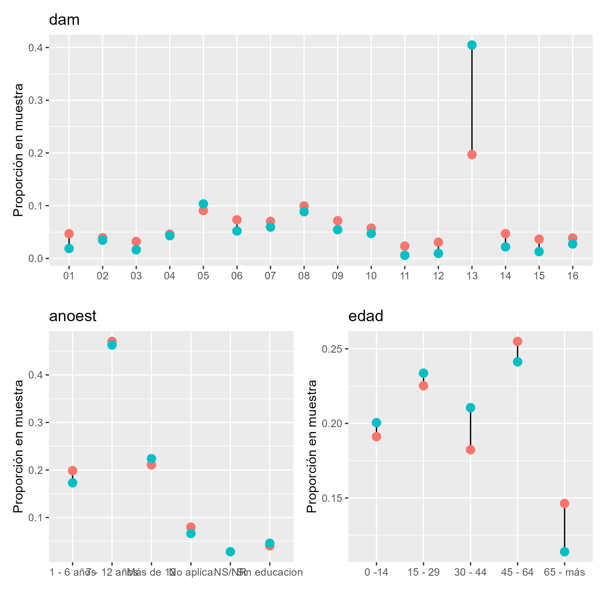
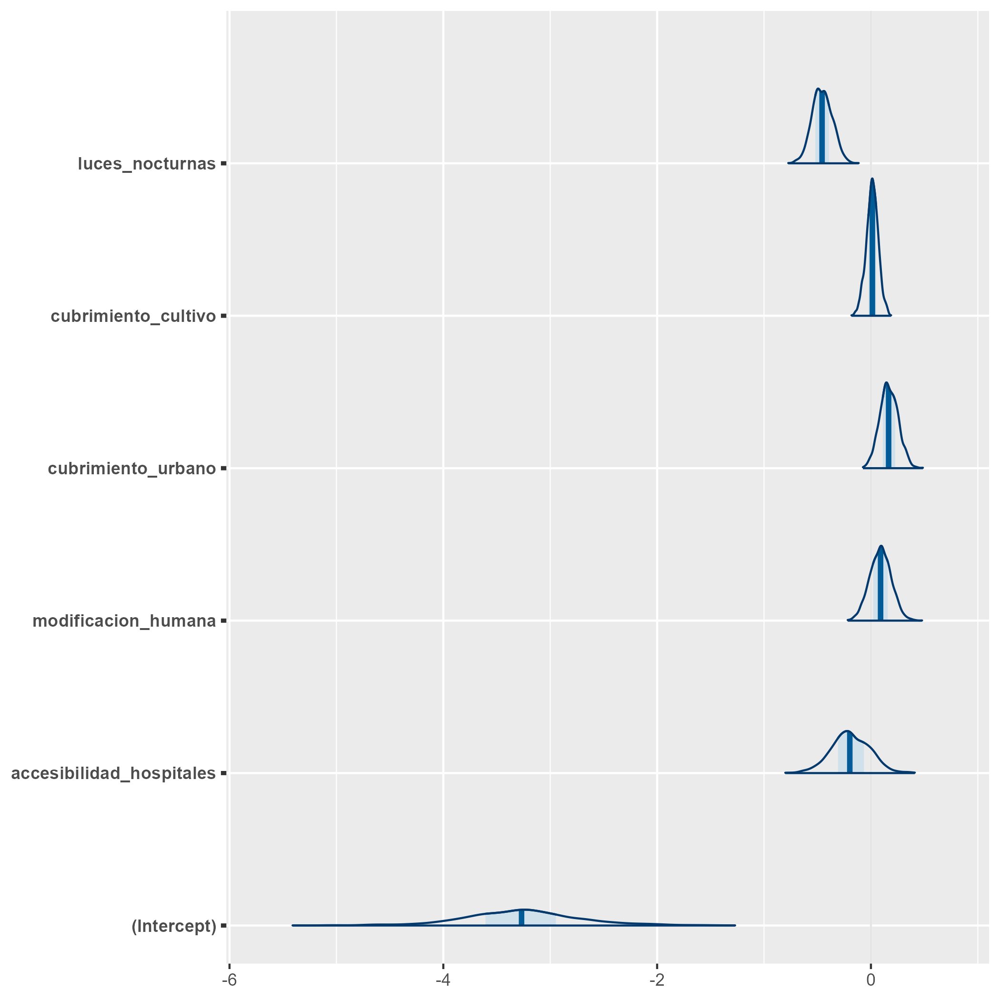
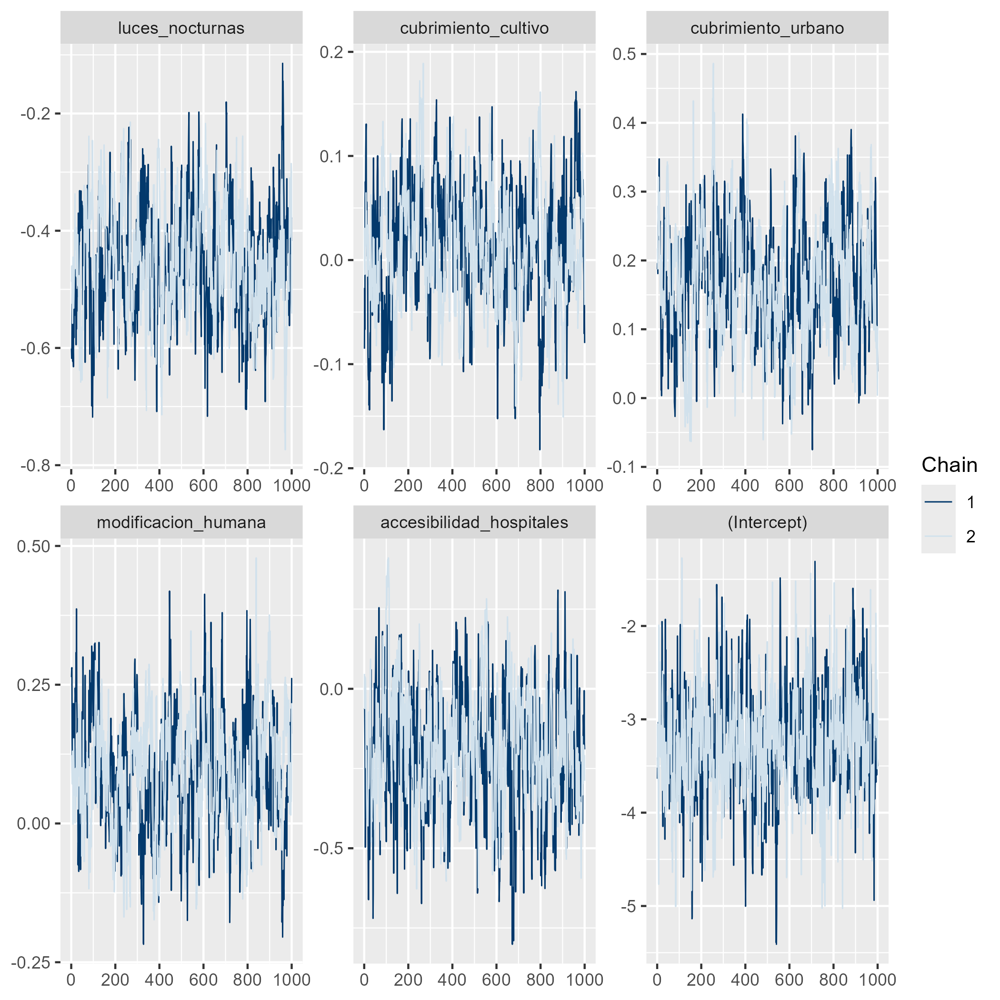

# Interprete de STAN en R
library(rstan)
library(rstanarm)
# Manejo de bases de datos.
library(tidyverse)
# Gráficas de los modelos.
library(bayesplot)
library(patchwork)
# Organizar la presentación de las tablas
library(kableExtra)
library(printr)
# devtools::install_github("hrbrmstr/ggalt")
source("../Recursos/Modelo_unidad/funciones/funciones_mrp.R")
source("../Recursos/Modelo_unidad/funciones/geom_dumbbell.R")Curso de Benchmarking para Modelos Bayesianos de Estimación en Áreas Pequeñas con Métodos MCMC
Modelo de unidad para pobreza
Andrés Gutierrez - Stalyn Guerrero
División de Estadísticas - CEPAL
Introducción (I)
En la inferencia Bayesiana para estimación de áreas pequeñas (SAE), los métodos de Monte Carlo por Cadenas de Markov (MCMC) permiten aproximar distribuciones posteriores complejas.
Estos métodos se emplean para modelos con:
- Estructura jerárquica.
- Supuestos de distribución no estándar.
- Estructura jerárquica.
La validez de los estimadores depende de la convergencia y eficiencia de las cadenas.
Modelo de unidad
Contexto y problema
No es apropiado usar regresión lineal cuando la variable dependiente es binaria.
¿Por qué? Porque una regresión lineal puede predecir probabilidades fuera del rango ([0,1]) y la varianza depende de la media —violando supuestos fundamentales.
Solución: regresión logística
- Se modela la probabilidad del evento mediante una transformación logit:
\[ \operatorname{logit}(\theta)=\ln\left(\frac{\theta}{1-\theta}\right) \]
- \(\theta\) = probabilidad de éxito (evento de interés).
Definición de la variable dependiente
Sea la variable indicadora:
\[ y_{ji}=\begin{cases} 1 & \text{si } ingreso_{ji}\le lp,\\ 0 & \text{en caso contrario.} \end{cases} \]
- \(ingreso_{ji}\): ingreso de la persona (i) en el post-estrato (j).
- \(lp\): línea de pobreza (umbral).
Modelo: logit con efecto aleatorio de área
Se modela la relación entre la probabilidad esperada \(\theta_{ji}=E[y_{ji}]\) y las covariables a nivel de unidad \(\mathbf{x}_{ji}\) más un efecto aleatorio de área \(u_d\):
\[ \operatorname{logit}(\theta_{ji})=\mathbf{x}_{ji}^{T}\boldsymbol{\beta}+u_d \]
- \(\boldsymbol{\beta}\): efectos fijos de las covariables.
- \(u_d\sim N(0,\sigma_u^2)\): efecto aleatorio para el área/dominio.
Interpretación breve
\(\beta_k\): cambio en el log-odds por unidad de la covariable \(x_k\), manteniendo las demás constantes.
Para obtener cambios en probabilidad, convertir log-odds a probabilidades vía la función logística:
\[ \theta=\frac{\exp(\eta)}{1+\exp(\eta)},\quad \eta=\mathbf{x}^{T}\boldsymbol{\beta}+u_d \]
Prioriad descriptas (no informativas)
- Para los coeficientes fijos:
\[\beta_k\sim N(0,1000)\]
- Para la varianza del efecto aleatorio:
\[\sigma^2_u\sim IG(0.0001,0.0001)\]
Obejtivo
Estimar la proporción de personas que están por debajo de la linea pobreza, es decir, \[ P_d = \frac{\sum_{U_d}y_{di}}{N_d} \] donde \(y_{di}\) toma el valor de 1 cuando el ingreso de la persona es menor a la linea de pobreza 0 en caso contrario.
Descomposición muestral
- Separando la población en la muestra \(s_d\) y el complemento fuera de muestra \(s_d^c\):
\[ \begin{equation*} \bar{Y}_d = P_d = \frac{\sum_{s_d}y_{di} + \sum_{s^c_d}y_{di}}{N_d} \end{equation*} \]
- Esto muestra que la pobreza del dominio depende tanto de los datos observados como de los no observados.
Estimador bajo modelo de unidad (I)
- Sustituimos los valores fuera de muestra por predicciones del modelo:
\[ \hat{P} = \frac{\sum_{s_d}y_{di} + \sum_{s^c_d}\hat{y}_{di}}{N_d} \]
donde
\[\hat{y}_{di}=E_{\mathscr{M}}\left(y_{di}\mid\boldsymbol{x}_{d},\boldsymbol{\beta}\right)\],
donde \(\mathscr{M}\) hace referencia a la medida de probabilidad inducida por el modelamiento.
Estimador bajo modelo de unidad (II)
- De esta forma:
\[ \hat{P} = \frac{\sum_{U_{d}}\hat{y}_{di}}{N_d} \]
- Es decir, el estimador combina la información muestral con las predicciones del modelo para toda la población.
Estimación bajo MCMC
El proceso de predicción de la pobreza en dominios no observados se realiza mediante MCMC, combinando la información muestral y la estructura del modelo de unidad.
Esta aproximación permite:
- Propagar la incertidumbre de los parámetros.
- Obtener predicciones consistentes a nivel de unidad y dominio.
- Propagar la incertidumbre de los parámetros.
Proceso de estimación en R (I)
Librerías principales utilizadas:
Proceso de estimación en R (II)
- Funciones desarrolladas para simplificar la metodología (archivo
funciones_mrp.R):
- plot_interaction:
- Crea diagramas de líneas para estudiar la interacción entre variables.
- Útil para detectar solapamientos y decidir si incluir interacción en el modelo.
- Plot_Compare:
- Valida la homologación entre censo y encuesta.
- Compara proporciones de variables homogéneas entre ambos conjuntos de datos.
- Aux_Agregado:
- Genera estimaciones a diferentes niveles de agregación.
- Especialmente útil en procesos repetitivos o cuando se requiere análisis por dominios.
Las funciones están diseñada específicamente para este proceso
Encuesta de hogares
Los datos empleados en esta ocasión corresponden a la ultima encuesta de hogares, la cual ha sido estandarizada por CEPAL y se encuentra disponible en BADEHOG
| dam | dam2 | upm | estrato | ingreso | lp | li | pobreza | logingreso | area | sexo | anoest | edad | etnia | fep |
|---|---|---|---|---|---|---|---|---|---|---|---|---|---|---|
| 01 | 01101 | 1100100001 | 11001 | 250000.0 | 113958 | 51309 | 0 | 12.4292 | 1 | 2 | 3 | 4 | 1 | 39 |
| 01 | 01101 | 1100100001 | 11001 | 211091.0 | 113958 | 51309 | 0 | 12.2600 | 1 | 2 | 3 | 2 | 3 | 39 |
| 01 | 01101 | 1100100001 | 11001 | 296750.0 | 113958 | 51309 | 0 | 12.6006 | 1 | 1 | 3 | 2 | 3 | 39 |
| 01 | 01101 | 1100100001 | 11001 | 296750.0 | 113958 | 51309 | 0 | 12.6006 | 1 | 1 | 3 | 2 | 3 | 39 |
| 01 | 01101 | 1100100001 | 11001 | 113889.0 | 113958 | 51309 | 1 | 11.6430 | 1 | 1 | 4 | 2 | 3 | 39 |
| 01 | 01101 | 1100100001 | 11001 | 113889.0 | 113958 | 51309 | 1 | 11.6430 | 1 | 2 | 4 | 2 | 3 | 39 |
| 01 | 01101 | 1100100001 | 11001 | 113889.0 | 113958 | 51309 | 1 | 11.6430 | 1 | 2 | 98 | 1 | 3 | 39 |
| 01 | 01101 | 1100100001 | 11001 | 231666.5 | 113958 | 51309 | 0 | 12.3531 | 1 | 2 | 3 | 4 | 3 | 39 |
| 01 | 01101 | 1100100001 | 11001 | 231666.5 | 113958 | 51309 | 0 | 12.3531 | 1 | 2 | 3 | 3 | 3 | 39 |
| 01 | 01101 | 1100100001 | 11001 | 418750.0 | 113958 | 51309 | 0 | 12.9450 | 1 | 2 | 3 | 4 | 3 | 39 |
Variables de la encuesta
dam: Corresponde al código asignado a la división administrativa mayor del país.
dam2: Corresponde al código asignado a la segunda división administrativa del país.
lp y li lineas de pobreza y pobreza extrema definidas por CEPAL.
área división geográfica (Urbano y Rural).
sexo Hombre y Mujer.
etnia En estas variable se definen tres grupos: afrodescendientes, indígenas y Otros.
anoest Años de escolaridad
edad Rangos de edad
fep Factor de expansión por persona
Validación de encuesta frente al censo.

Información Auxiliar (I)
- La información auxiliar proviene de:
- Censo de población
- Imágenes satelitales
- Variables estandarizadas (ejemplo):
- Luces nocturnas
- Cobertura de cultivos y urbano
- Modificación humana
- Accesibilidad a hospitales
- Luces nocturnas
Información Auxiliar (II)
| dam2 | area0 | area1 | etnia2 | sexo2 | edad2 | edad3 | edad4 | edad5 | anoest2 | anoest3 | anoest4 | anoest99 | etnia1 | piso_tierra | material_paredes | material_techo | rezago_escolar | alfabeta | tasa_desocupacion | pollution_CO | vegetation_NDVI | Elevation | temperature_ECMWF | temperature_2metros | total_precipitation | precipitation | population_density | luces_nocturnas | cubrimiento_cultivo | cubrimiento_urbano | modificacion_humana | accesibilidad_hospitales | accesibilidad_hosp_caminado |
|---|---|---|---|---|---|---|---|---|---|---|---|---|---|---|---|---|---|---|---|---|---|---|---|---|---|---|---|---|---|---|---|---|---|
| 01101 | 0.0126 | 0.9874 | 0.0016 | 0.5044 | 0.2374 | 0.2338 | 0.2242 | 0.0926 | 0.1360 | 0.4547 | 0.2711 | 0.0245 | 0.1709 | 0.0051 | 0.2133 | 0.5059 | 0.3940 | 0.0285 | 0.0703 | 0.0229 | -1.7713 | -0.0492 | 2.0871 | 1.3892 | 0e+00 | 0.0057 | -0.3101 | -0.4713 | -0.9633 | -0.3591 | -0.6911 | 0.0238 | 0.0469 |
| 01107 | 0.0230 | 0.9770 | 0.0011 | 0.4998 | 0.2723 | 0.2157 | 0.1863 | 0.0426 | 0.1856 | 0.5305 | 0.0978 | 0.0358 | 0.2949 | 0.0372 | 0.2447 | 0.5403 | 0.1832 | 0.0528 | 0.0851 | 0.0229 | -1.7300 | 0.2182 | 2.3984 | 1.6136 | 0e+00 | 0.0078 | -0.2644 | -0.1883 | -0.9633 | -0.3157 | -0.4150 | -0.2180 | -0.0922 |
| 01401 | 0.3575 | 0.6425 | 0.0004 | 0.4280 | 0.2539 | 0.2415 | 0.2023 | 0.0719 | 0.1781 | 0.5285 | 0.1377 | 0.0280 | 0.4207 | 0.0193 | 0.6109 | 0.8826 | 0.2323 | 0.0513 | 0.0762 | 0.0209 | -1.7393 | 0.9481 | 1.8649 | 1.5590 | 0e+00 | 0.0068 | -0.3569 | -0.5357 | -0.9607 | -0.3883 | -1.3414 | 0.4371 | 0.1599 |
| 01402 | 1.0000 | 0.0000 | 0.0000 | 0.4744 | 0.2064 | 0.1792 | 0.2376 | 0.1568 | 0.2536 | 0.4256 | 0.0752 | 0.0720 | 0.8568 | 0.0194 | 0.6728 | 0.9187 | 0.1814 | 0.1854 | 0.0380 | 0.0190 | -1.7546 | 2.2707 | 1.1709 | 0.6441 | 0e+00 | 0.0093 | -0.3582 | -0.5581 | -0.9618 | -0.3905 | -1.4837 | 0.9270 | 0.2968 |
| 01403 | 1.0000 | 0.0000 | 0.0006 | 0.4242 | 0.2685 | 0.2378 | 0.2269 | 0.1209 | 0.2529 | 0.3686 | 0.1539 | 0.0799 | 0.8113 | 0.0864 | 0.9684 | 0.9782 | 0.2796 | 0.1937 | 0.0494 | 0.0153 | -1.5885 | 4.3891 | -1.1246 | -2.0702 | 1e-04 | 0.0228 | -0.3581 | -0.5595 | -0.9362 | -0.3875 | -1.4958 | 0.1454 | -0.0117 |
Niveles de Agregación
- De la literatura y simulaciones se concluye que:
- Las predicciones con muestra sin agregar y agregada convergen a la media del dominio.
- Usar muestra agregada reduce el tiempo computacional para la convergencia MCMC.
- Las predicciones con muestra sin agregar y agregada convergen a la media del dominio.
- Variables de agregación seleccionadas: dam2 (división administrativa menor), área, sexo, anoest (años de estudio), edad y etnia
Encuesta Agregada
- Construcción de la base de datos agregada:
| dam2 | area | sexo | anoest | edad | etnia | n | pobreza | no_pobreza |
|---|---|---|---|---|---|---|---|---|
| 15101 | 1 | 2 | 3 | 2 | 3 | 334 | 59 | 275 |
| 02101 | 1 | 2 | 3 | 2 | 3 | 391 | 52 | 339 |
| 02101 | 1 | 1 | 3 | 2 | 3 | 432 | 49 | 383 |
| 15101 | 1 | 2 | 2 | 1 | 3 | 225 | 48 | 177 |
| 04101 | 1 | 2 | 3 | 2 | 3 | 194 | 47 | 147 |
| 04102 | 1 | 2 | 3 | 2 | 3 | 157 | 46 | 111 |
| 15101 | 1 | 2 | 3 | 3 | 3 | 340 | 46 | 294 |
| 01107 | 1 | 1 | 3 | 2 | 3 | 265 | 44 | 221 |
- Finalmente, se unifica con la información auxiliar:
Definición del Modelo Multinivel
Se utiliza un modelo jerárquico bayesiano para el ingreso medio: \[ \begin{align*} \log(Y_{di}) &\sim (1 \mid dam2) + (1 \mid edad) + (1 \mid etnia) \\ & + \beta_0 + \beta_1\times edad + \beta_2\times sexo + \beta_3\times tasa\_desocupacion \\ &+ \beta_4\times luces\_nocturnas + \beta_5\times cubrimiento\_cultivo \\ &+ \beta_6\times cubrimiento\_urbano + \beta_7\times modificacion\_humana \end{align*} \]
Estimado con
stan_lmer(rstanarm).
Efecto aleatorio: \(u_d\) por dominio (
dam2).
Covariables: demográficas y satelitales.
Proceso de estimación en R (I)
Código de R
options(MC.cores=parallel::detectCores()) # Permite procesar en paralelo.
fit <- stan_glmer(
cbind(pobreza, no_pobreza) ~ # Ingreso medio (Y)
(1 | dam2) + # Efecto aleatorio (ud)
(1 | edad) +
(1 | etnia) +
sexo + # Efecto fijo (Variables X)
tasa_desocupacion +
luces_nocturnas +
cubrimiento_cultivo +
cubrimiento_urbano +
modificacion_humana +
accesibilidad_hospitales +
accesibilidad_hosp_caminado , ,
data = encuesta_df_agg, # Encuesta agregada
verbose = TRUE, # Muestre el avance del proceso
chains = 2, # Número de cadenas.
iter = 2000, # Número de realizaciones de la cadena
family = binomial(link = "logit")
)
saveRDS(fit, file = "../Recursos/Modelo_unidad/fit_pobreza.rds")Proceso de estimación en R (II)
| (Intercept) | sexo2 | tasa_desocupacion | luces_nocturnas | cubrimiento_cultivo | cubrimiento_urbano | modificacion_humana | accesibilidad_hospitales | accesibilidad_hosp_caminado | |
|---|---|---|---|---|---|---|---|---|---|
| 01101 | -3.8530 | 0.152 | 15.2309 | -0.457 | 0.0136 | 0.1654 | 0.0902 | -0.1976 | -0.1401 |
| 01107 | -3.2542 | 0.152 | 15.2309 | -0.457 | 0.0136 | 0.1654 | 0.0902 | -0.1976 | -0.1401 |
| 01401 | -3.4509 | 0.152 | 15.2309 | -0.457 | 0.0136 | 0.1654 | 0.0902 | -0.1976 | -0.1401 |
| 01402 | -4.0627 | 0.152 | 15.2309 | -0.457 | 0.0136 | 0.1654 | 0.0902 | -0.1976 | -0.1401 |
| 01404 | -2.9944 | 0.152 | 15.2309 | -0.457 | 0.0136 | 0.1654 | 0.0902 | -0.1976 | -0.1401 |
Validación del Modelo (I)
- Comparación de densidades observadas vs predichas:
Código de R
library(posterior)
library(bayesplot)
encuesta_mrp2 <- inner_join(encuesta_mrp, statelevel_predictors_df)
y_pred_B <- posterior_epred(fit, newdata = encuesta_mrp2)
rowsrandom <- sample(nrow(y_pred_B), 100)
y_pred2 <- y_pred_B[rowsrandom, ]
p1 <- ppc_dens_overlay(y = as.numeric(encuesta_mrp2$pobreza), y_pred2)
ggsave(filename = "img/pobreza.PNG", plot = p1)Validación del Modelo (II)

Validación del Modelo (III)
- Convergencia de parámetros: Gráficos área.

Validación del Modelo (II)
- Convergencia de parámetros: Gráficos Trace

Predicción de la pobreza
Código de R
perdidos <- anti_join(censo_dam2,
statelevel_predictors_df, by = "dam2") %>%
select(dam, dam2)
poststrat <- censo_dam2 %>% anti_join(perdidos)
poststrat <- inner_join(poststrat, statelevel_predictors_df)
draw_predict <- posterior_epred(fit, newdata = poststrat)
censo_pred <- poststrat %>% select(names(censo_dam2)) %>%
mutate(
pobreza = colMeans(draw_predict)
)
saveRDS(censo_pred, file = "../Recursos/Modelo_unidad/censo_pred.rds")Estimación de la pobreza nacional
| pobreza |
|---|
| 0.1099 |
Estimación de la pobreza por sexo
| sexo | pobreza |
|---|---|
| 1 | 0.1045 |
| 2 | 0.1152 |
Estimación de la pobreza por dam
| dam | pobreza |
|---|---|
| 01 | 0.1068 |
| 02 | 0.0836 |
| 03 | 0.1192 |
| 04 | 0.1669 |
| 05 | 0.0960 |
| 06 | 0.1165 |
| 07 | 0.1363 |
| 08 | 0.1455 |
¡Gracias!